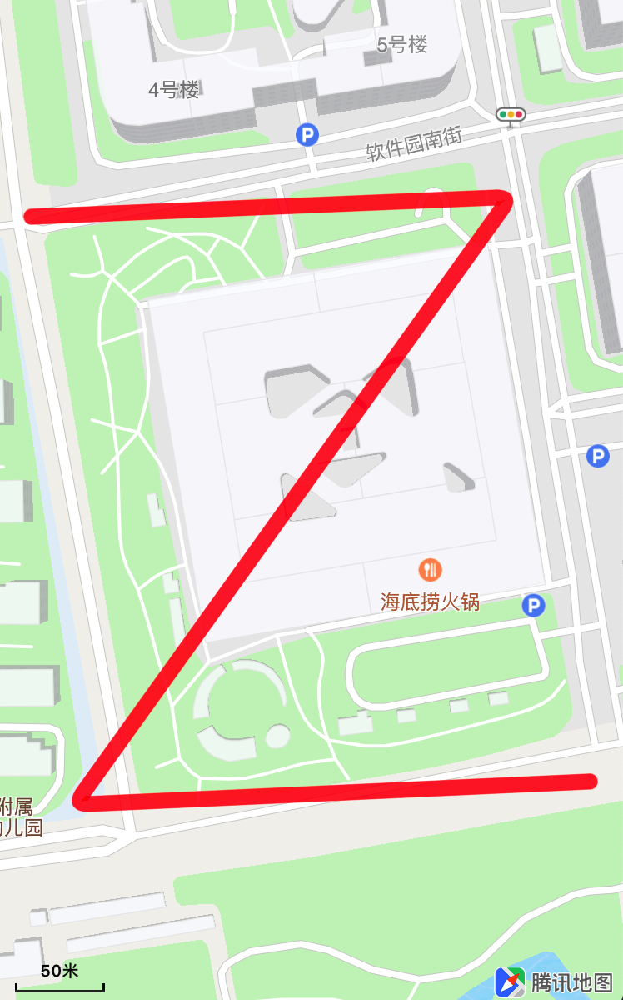
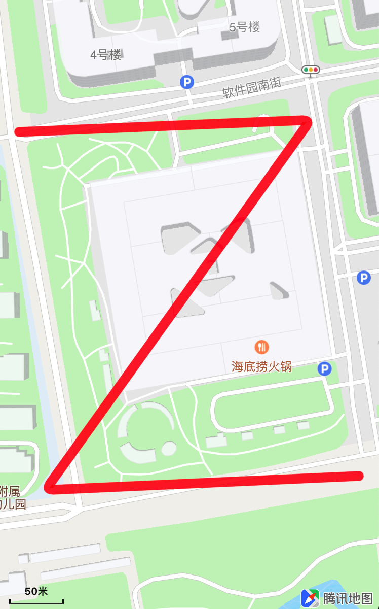
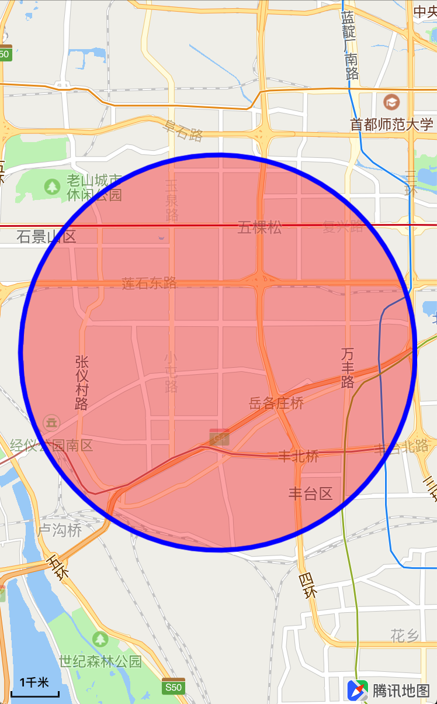

视野范围设置
视野范围设置分为：
- 设置地图当前可见范围(mapRect)
- 设置地图当前可视区域(region)
设置地图可见范围
QMapView类中的的
setVisibleMapRect:方法用于设置地图显示范围，并使mapRect四周保留insets指定的边界区域，示例如下：
/**
* @brief 设置当前地图可见范围的mapRect，并保留insets指定的边界区域
*
* @param mapRect 目标mapRect
* @param insets 要嵌入的边界
* @param animated 是否采用动画
*/
[self.mapView setVisibleMapRect:QMapRectMake(220911420, 101575260, 24000, 38592)
edgePadding:UIEdgeInsetsMake(10, 10, 10, 10)
animated:YES];
设置地图可见区域
region表示地图中的一块区域，通常用于将地图当前视野调整到指定的区域范围显示，示例如下：
// 创建region
QCoordinateRegion region = QCoordinateRegionMake(CLLocationCoordinate2DMake(39.927642, 116.559448), QCoordinateSpanMake(1, 1));
/**
* @brief 设定当前地图的region
*
* @param region 要设定的地图范围，用经纬度的方式表示
* @param insets 要嵌入的边界
* @param animated 是否采用动画
*/
[self.mapView setRegion:region
edgePadding:UIEdgeInsetsMake(10, 10, 10, 10)
animated:YES];
常用方法
展示Annotation、Polyline和多边形：
- 获取构成Annotation、Polyline和多边形的的坐标
- 计算这些坐标构成的最小外接region
更新地图显示region
// 点标注坐标 CLLocationCoordinate2D coordinates[4]; coordinates[0] = CLLocationCoordinate2DMake(40.041554,116.271508); coordinates[1] = CLLocationCoordinate2DMake(40.041652,116.274619); coordinates[2] = CLLocationCoordinate2DMake(40.03863,116.271787); coordinates[3] = CLLocationCoordinate2DMake(40.038745,116.275134); // 计算最小外接区域 QCoordinateRegion region = QBoundingCoordinateRegionWithCoordinates(coordinates, 4); // 更新可见region [self.mapView setRegion:region edgePadding:UIEdgeInsetsZero animated:YES];效果如图所示：
 

展示Circle
- 圆形的数据模型QCircle，包含了构成圆形的中心点和半径，
circle.boundingMapRect属性表示该圆形的外接矩形 更新地图显示mapRect
// 获取外接矩形 QMapRect maprect = _circle.boundingMapRect; // 更新显示mapRect [self.mapView setVisibleMapRect:maprect edgePadding:UIEdgeInsetsMake(20, 20, 20, 20) animated:YES];效果如图所示：

- 圆形的数据模型QCircle，包含了构成圆形的中心点和半径，
常见问题
setVisibleMapRect:edgePadding:animated:方法中的edgePadding参数的作用edgePadding参数接收UIEdgeInsets类型的值，显示指定的mapRect范围时，可以在四周加入边界。如展示Circle案例中，左右各预留20的边界，这样可以让Circle显示在更靠中间的位置调用
setVisibleMapRect:edgePadding:animated:方法没有效果，或者出现了地图移动到指定的范围之外设置
edgePadding参数时，如果UIEdgeInsets的left-right和top-bottom值的和不能超过屏幕的宽高。